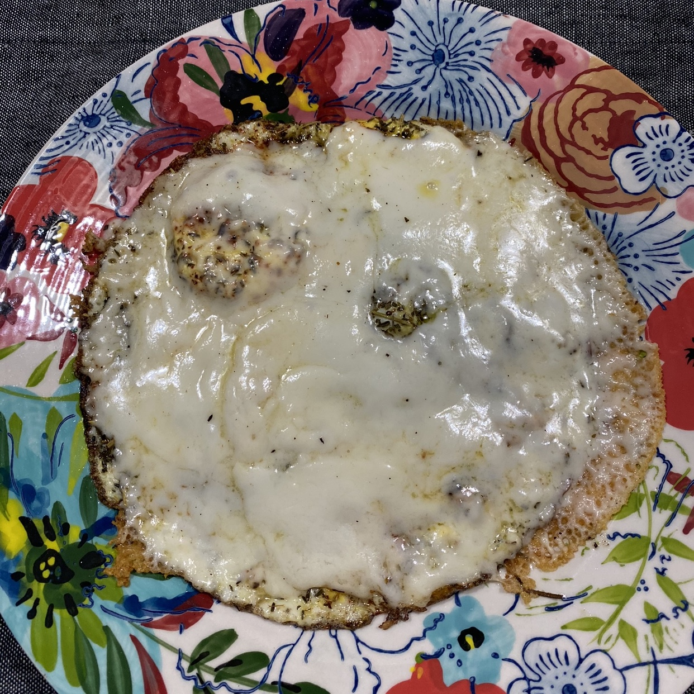

Our go-to Eggs

How to Make Our go-to Eggs
Ingredients
- 2 Organic Eggs
- Turkey Breast (We use Boar's Head Honey Roasted Turkey Breast)
- 1/4 Cup Grated Parmesan Cheese
- Salt, Pepper, and Herbs to taste for seasoning
Instructions
Step 1: Place 1 or 2 slices of turkey breast into a medium size skillet on medium heat. Let it get a littler warm but not completely golden
Step 2: Crack the 2 eggs on top of the breast (like if you were to do fried eggs)
Step 3: Sprinkle the salt, pepper, and herbs to taste on top of the eggs
Step 4: Cover the skillet completely
Step 5: Once the egg yolk has cooked, sprinkle the parmesan cheese and cover once again
Step 6: Let cook until desired and serve